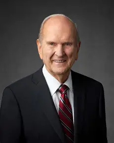

A Life Dedicated to Helping Others

Russell M. Nelson is an inspiring example of someone who dedicated his life to serving others. Before becoming a leader in the Church of Jesus Christ of Latter-day Saints, he worked as a heart surgeon and helped improve the lives of many patients. His career required years of education, patience, and determination. Through his work, he showed that using our talents to help other people can make a meaningful difference in the world.
One of the lessons I find inspiring about President Nelson is the importance of faith, kindness, and personal growth. He has encouraged people to strengthen their relationship with God and make choices that bring them closer to Him. His example reminds me that becoming a better person happens through small, consistent efforts every day. I believe his life teaches us that we can make a positive difference by serving others and staying true to our values.
Words of Inspiration
"The joy we feel has little to do with the circumstances of our lives and everything to do with the focus of our lives."
What I Learn From His Example
President Nelson inspires me to work hard, stay positive, and look for opportunities to help others. His life reminds me that success is not only about personal achievements, but also about the difference we make in other people's lives. I hope to follow his example by showing kindness, developing my talents, and continuing to grow throughout my life.